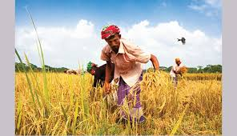

Summer in Bangladesh is hot and humid, with temperatures soaring above 30°C. The season, from March to June, brings intense sunshine, occasional monsoons, and vibrant green landscapes. People seek relief in traditional events like water festivals and mango harvesting.
Bangladesh's summer is marked by intense heat, reaching temperatures up to 40°C. Monsoon rains provide relief but lead to high humidity. Lush greenery thrives amid occasional storms. Festivals, like Eid, add vibrancy. Mango season flourishes, offering sweet respite amidst the sweltering conditions.
click here for referance pictureRainy Season arrives in the form of blessings for the Bangladeshi people right after the season of scorching heat ends. This is the second season out of the six which comes after the summer. The month of Ashar and Shraban from the Bengali calendar is the rainy season. But sometimes it may last up to Ashwin.
Bangladesh experiences a monsoon climate, characterized by distinct wet and dry seasons. The rainy season in Bangladesh typically occurs during the southwest monsoon, which generally spans from June to October. During this period, warm and moist air from the Bay of Bengal moves inland, bringing heavy rainfall to the region.
The peak of the rainy season in Bangladesh is usually in July and August. During this time, the country receives a significant amount of rainfall, leading to flooding in low-lying areas and riverbanks. The heavy rains are crucial for the country's agriculture, as they contribute to the cultivation of rice and other crops.
While the rainy season is essential for agriculture, it can also bring challenges such as flooding, landslides, and waterlogging in urban areas. The government and various organizations in Bangladesh often engage in preparedness and response activities to mitigate the impact of these challenges on communities.
Click here for photo sourceSarat ritu is followed immediately after the rainy season. It falls in the months of Bhadra and Aswin. It is the most suitable season for the tourists since the sky would be filled with patches of light clouds and winds, but there would be no trace of rain. People can spend time with their families during picnics since the days would be warm, perfect for a get-together.
In this season, there’s a gradual decrease in humidity. During Sarat ritu, many fishes are found in the rivers. Jute, the cash crop, is mainly harvested in this season. Flowers such as Mallika, roses, lotus and other aquatic flowers bloom during the Sarat ritu. Durga puja is celebrated with grandeur during this time to welcome the winter season.

Late autumn in Bangladesh, spanning from November to December, marks a transition from the monsoon season to a more temperate and dry climate. During this period, temperatures range from a mild 20 to 30 degrees Celsius (68 to 86 degrees Fahrenheit), with pleasantly cool evenings. The skies are clearer as the rainfall diminishes, and deciduous trees may shed their leaves, altering the landscape. Agriculturally, it is a crucial time for harvesting crops like rice and jute. Festivities include the celebration of Eid-ul-Fitr, bringing joy to the country. The season encourages outdoor cultural activities, and people may don warmer clothing, particularly in the evenings and early mornings. Late autumn presents a distinctive phase in Bangladesh, characterized by a harmonious blend of agricultural activities, cultural celebrations, and a more comfortable climate.
Winter in Bangladesh, spanning from December to February, introduces a refreshing change in climate characterized by cooler temperatures. During the day, the weather typically ranges from 10 to 25 degrees Celsius (50 to 77 degrees Fahrenheit), with even cooler nights. The season is marked by clear skies, minimal rainfall, and a dry atmosphere. Many deciduous trees shed their leaves, giving the landscape a somewhat bare appearance, although winter flowers may bloom in some areas. This period is significant for agriculture, with farmers cultivating winter crops such as wheat and mustard. Winter in Bangladesh is also a time of celebration, with various traditional festivals adding vibrancy to the cultural scene. As temperatures drop, people don warmer clothing, and the mornings often witness the formation of dew, contributing to a serene and picturesque ambiance. Some regions may experience mist or fog, enhancing the beauty of the surroundings. Overall, winter in Bangladesh offers a pleasant and festive atmosphere, blending agricultural activities, cultural events, and a cooler climate.
Click here for image sourceSpring in Bangladesh, spanning from March to May, ushers in a delightful transformation in the country's climate. As the chill of winter gives way to milder temperatures, the weather becomes pleasantly warm during the day, with cool evenings. One of the most striking aspects of this season is the burst of colors across the landscape as flowers bloom and trees regain their lush greenery. Spring marks the celebration of the Bengali New Year, known as "Pohela Boishakh," a cultural and joyous occasion celebrated with traditional music, dance, and vibrant processions typically occurring in mid-April. This season also sees the harvest of crops like mustard, adding to the agricultural vibrancy. People take advantage of the agreeable weather to engage in outdoor activities, with parks and gardens becoming popular venues for picnics and gatherings. Cultural events, fairs, and exhibitions showcase the rich heritage of Bangladesh, and tourists flock to explore historical sites and natural wonders. Overall, spring in Bangladesh is a time of rejuvenation, celebration, and appreciation of the country's natural beauty and cultural richness.
.jpg)